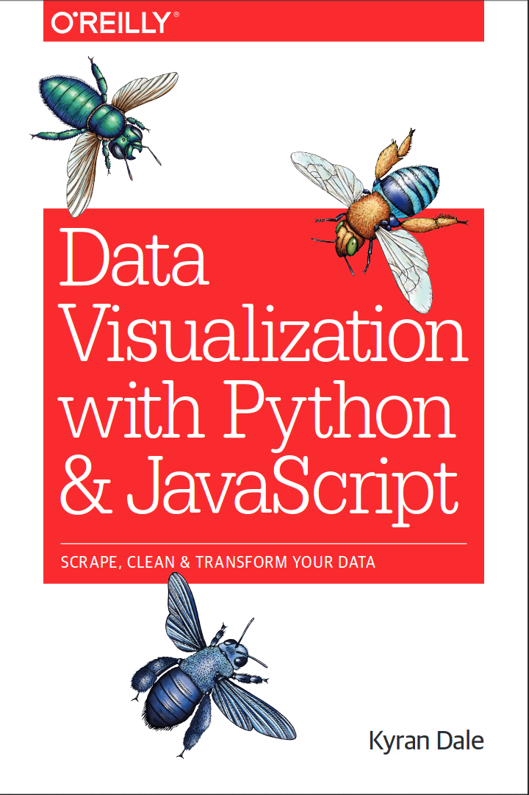

Brief Introduction
I'm an ex research scientist, bumble-bee trainer, evolutionary roboticist. Now primarily interested in what JavaScript can achieve on your local browser, particularly in the field of data visualization (not optional!). Currently playing with D3 and WebVR.
Data Visualization with Python and JavaScript
The Dataviz Toolchain
Transforming the data
Why Dataviz Must Go To the Web
Why Dataviz Must Go To the Web
The humble URL as a token of exchange.
- Cloud servers in a few clicks (AWS, Heroku, DigitalOcean etc.)
- JFiddle, JSBin et. al. - demo live JavaScript visualisations.
- http://blockbuilder.org/ - Github gists to D3 visualisations (11,000 examples!).
- Rich ecosystem, skills freely traded, standards rising inexorably.
- Barriers to entry dropping all the time...
Nobody Likes Me, Everybody Hates Me...
Coming to terms with JavaScript
JavaScript's Development
- JS a 'toy' language.
- Ugly, kludgy syntax
- Slow interpreter
- Generally small code-bases
- Difficult to scale
ECMAScript 2016
Better all the time
- Modules!!, e.g. `import defaultMember from "module-name";'
- First class functional methods like
map,reduceandfilter. - Default parameters!, e.g. `foo = function(bar, baz=10){...'
- No more for loops, e.g. `[1, 2, 3].forEach(d => console.log(d));'
- The very handy spread operator
{...object, key1=value1} - And many more syntactic conveniences...
Shifting Bits
JS smokes Python for speed

The Joys of D3
Beyond the barchart
- Implementation of Wilkinson's 'Grammar of Graphics' (cf. ggplot2)
- Solid theoretical core makes it incredibly powerful and expressive
- It flows where other libraries tend to lock-up
- Perhaps the greatest genius of Mike Bostock was implementing it in Javascript (then considered a 'toy' language)
- Not a charting library but the library you make charting libraries with
- New forms of data-visualisation waiting to be discovered
Hacks We Have Known
Empowerment close to the metal
Hacks We Have Known
Empowerment close to the metal
Hacks We Have Known
Empowerment close to the metal
var fixLabels = function() {
labelPos.sort(function(a, b) {
return a.pos > b.pos;
});
var labelToPos = {};
labelToPos[labelPos[0].name] = labelPos[0].pos;
labelPos.forEach(function(d,i){
if(i === labelPos.length-1){return;}
var dist = labelPos[i+1].pos - d.pos;
if(dist < MIN_LABEL_GAP){
labelPos[i+1].pos = d.pos + MIN_LABEL_GAP;
}
});
labelPos.forEach(function(d) {
labelToPos[d.name] = d.pos;
});
d3.selectAll(".line-label")
.transition()
.duration(1000)
.attr("transform", function(d) {
var yPos = labelToPos[sanitizeName(d.name)];
return "translate(" + x.range()[1] + ',' + yPos + ")"; });
};
Web-ward Options for Pythonistas and others
- Tableau, Power-Bi et. al.
- Jupyter (IPython) notebook with embedded charts.
- Plotly, Bokeh et. al.
- Vega (with Vincent) visualisation grammar.
- Bite the JavaScript bullet (D3 et. al.)...
Biting the JS (and D3) Bullet
Eventually, if your ambitions expand the programmers among you will probably become frustrated with the limitations of GUI-based dataviz. Being able to leverage the huge power of D3 opens up possibilites unachievable by other routes.
Recap Day 1
- Basic Webdev requirements
- Intro do D3
Webdev 101
- Four key compoments being HTML, CSS, JavaScript and, of course, the data.
- We build a dataviz framework in HTML and CSS and then...
- ... use JavaScript (and D3) to flesh it out by...
- ... reflecting our dataset in graphical form.
- This commonly involves manipulating SVG primatives
- We saw how circles, lines, rects, paths etc. can be hardcoded using HTML
- But usually we are using D3 to programmatically generate our graphical elements.
D3 Intro, the Story of a Barchart
- We saw the all important selectors (
selectandselectAllat work), using CSS style selection to grab and adapt elements. - We saw how attributes, styles, properties, text etc. could be adapted, using a setter form or retrieved using the methods without a second paramter
- With these tools to hand we looked at the fundamental update pattern, which uses the
data,enter,exit,mergeandremovemethods to keep a changing dataset in sync with a data visualization
Recap Day 2
- How to structure a complex data visualization
- How to do modern JS dataviz, using node, ES6 and a starter kit
Complex visualizations
Think in terms of a central datastore that is refelcted visually, through various charts or conventional HTML. When the datastore is changed, e.g. an array is filtered by field (all people over 35 say), that change is mirrored in the visual elements, propagating forward. This pattern is found in modern JS framworks such as React.
Doing Modern JS Dataviz
It's now easy to create all the boilerplate required to do modern JS development using a single command line starter-kit. We use create-react-app to demonstrate how to build a reusable D3 plugin. We saw how clean modern JS is when compared with having to curate style files, JS files et. al. and deal with link tags, script tags and the awkward use of HTML to manage JS libraries.